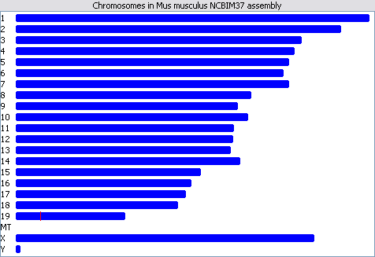

The Genome View shows an overview of all the chromosomes in your current genome. Once you have quantitated your data it will also show a whole genome view of the quantitation.

The chromosomes are drawn to scale so you can see their relative size. The outlined box indicates the region currently being shown in the chromosome view. This will update as you move along the chromosome view.
You can use the genome view to move the chromosome view to a different chromosome, or to a different part of the current chromosome. You can either click on a region to jump to that location, or drag a box to select the exact region you want to view.